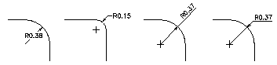
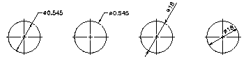

Autodesk AutoCAD 2021: ActiveX Developer's Guide > Dimensions, Leaders, and Geometric Tolerances > About Creating Dimensions (VBA/ActiveX) >
Radial dimensions measure the radii and diameters of arcs and circles. To create a radial dimension, use the AddDimRadial method.
Different types of radial dimensions are created depending on the size of the circle or arc, the TextPosition property, and the values in the DIMUPT, DIMTOFL, DIMFIT, DIMTIH, DIMTOH, DIMJUST, and DIMTAD dimension system variables. (System variables can be queried or set using the GetVariable and SetVariable methods.)
For horizontal dimension text, if the angle of the dimension line is more than 15 degrees from horizontal, and is outside the circle or arc, AutoCAD draws a hook line, also called a landing or dogleg. The hook line is one arrowhead long, and is placed next to the dimension text, as shown in the following illustrations:


To create radial dimensions, use the AddDimRadial or AddDimDiametric method. These methods require three values as input: the coordinate of the circle or arc's center, the coordinate for the leader attachment, and the length of the leader.
These methods use the LeaderLength parameter as the distance from the ChordPoint to the point where the dimension will do a horizontal hook line to the annotation text (or stop if no hook line is necessary).
This example creates a radial dimension in model space.
Sub Ch5_CreateRadialDimension()
Dim dimObj As AcadDimRadial
Dim center(0 To 2) As Double
Dim chordPoint(0 To 2) As Double
Dim leaderLen As Integer
' Define the dimension
center(0) = 0
center(1) = 0
center(2) = 0
chordPoint(0) = 5
chordPoint(1) = 5
chordPoint(2) = 0
leaderLen = 5
' Create the radial dimension in model space
Set dimObj = ThisDrawing.ModelSpace. _
AddDimRadial(center, chordPoint, leaderLen)
ZoomAll
End Sub